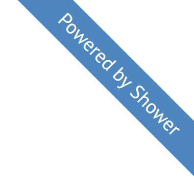

Александра Шинкевич
- Глава отдела фронтенда, LOVATA
- MinskCSS, MinskJS, CSS-Minsk-JS
- Спикер:
- FrontTalks,
- CopenhagenJS,
- FrontendConf,
- ...

Никита Дубко
- Software Engineer, iTechArt Group
- MinskCSS, MinskJS, CSS-Minsk-JS
- Спикер:
- WSD,
- FrontendConf,
- OdessaJS,
- ...

- Web Standard Days 2015 в Минске
- FrontendConf 2016
- Web Standard Days 2016 в Минске
- FrontendConf 2017
- FrontTalks 2017
- MinskCSS Meetup #3
- MinskCSS Meetup #4
- CopenhagenJS April 2018
- FrontendConf 2018
- OdessaJS 2018
- Web Standard Days 2018 в Санкт-Петербурге

- Web Standard Days 2017 в Минске
- MinskCSS Meetup #3
- Web Standard Days 2018 в Москве
- MinskJS Meetup #3
- MinskCSS Meetup #4
- FrontendConf 2018
- iTechForum 2018
- BeerJS Summit Minsk 2018
- OdessaJS 2018
- Web Standard Days 2018 в Санкт-Петербурге
Как прочитать доклад на русскоязычной конференции?
Спросить у программного комитета 🧐
Не обязательно что-то сложное 🥚
Выбрать конференцию / митап 🔍
Проверить дату
в календаре 📅
Придумать название и описание доклада 🗒
Разведка
- Deadline
- Тема и формат выступления
- Целевая аудитория
- Технические ограничения площадки
- Предварительный feedback
Раскопки
- Доклады / статьи / книги / летописи
- Демо, статистика, факапы
- Держать руку на пульсе
3. Структура и формат выступления
Структура доклада
- Доклад-история
- Обзорный/вводный доклад
- Доклад-tutorial
- Доклад-вдохновение
Формат доклада
- Мастер-класс (workshop)
- Выступление на конференции — 30–40 минут
- Выступление на митапе — 15–30 минут
- Lightning talk — 5–10 минут
Логические части
- Начало
- Основное содержание
- Выводы
4. Визуальный материал
4. Слайды
Оснащение площадки
- Свой ноутбук / общий ПК
- Пропорции слайдов
- Свет / звук / кликер / ...
Движок для слайдов
- PowerPoint 😕
- Keynote 🍏
- Google Slides 🌈
- Shower ❤️
- и т.д.

Приготовьте
- Бэкапы слайдов (флешка, облако, телефон, распечатка)
- Демо + видео демо
- Озвучка голосом, если звук не заведется
- PDF — наше все
- Шутку на случай апокалипсиса
Простой алгоритм
Репетиция()
Получить_фидбек()
GOTO 01
Следить за богатым внутренним миром 🦄
А слабо на английском?
🇬🇧
Прогоны с теми,
кто не успел сбежать 🏃
Запись на видео / аудио 🎥
Привыкать к звуку своего голоса 🙊
Посмотреть на себя в зеркало 🤪
Размять речевой аппарат 😲
Подготовиться морально 🧘
Зайти в
Мадамскую и/или
Жентельменскую комнату
Расслабьтесь и получайте удовольствие 💆♂️
Не смейтесь над своими шутками 😂
Не бойтесь быть честным 🤷♂️
Несколько вопросов подряд ❓❓❓
Вопросы — не критика 🙋♂️
Тактика
- Вопросы по теме — ответить
- Вопросы не по теме — ответить коротко
- Вопросы-дополнения — поблагодарить
- Холивар — «Выйдем поговорим?»
Пересмотреть видео доклада
⚠️ Предостережения
- Не готовьте парные доклады
- Никогда не готовьте парные доклады
- ВООБЩЕ НИКОГДА не готовьте парные доклады
Минусы парных докладов
- Докладчики разные
- Сложно готовиться
- Нужно больше репетировать
- Две точки отказа
- Вы будете целый час спорить о тезисах в
двух трех шести предложениях
Рискните, если
- Вы не новички
- Тема простая
- Вы не дружите с кукушечкой